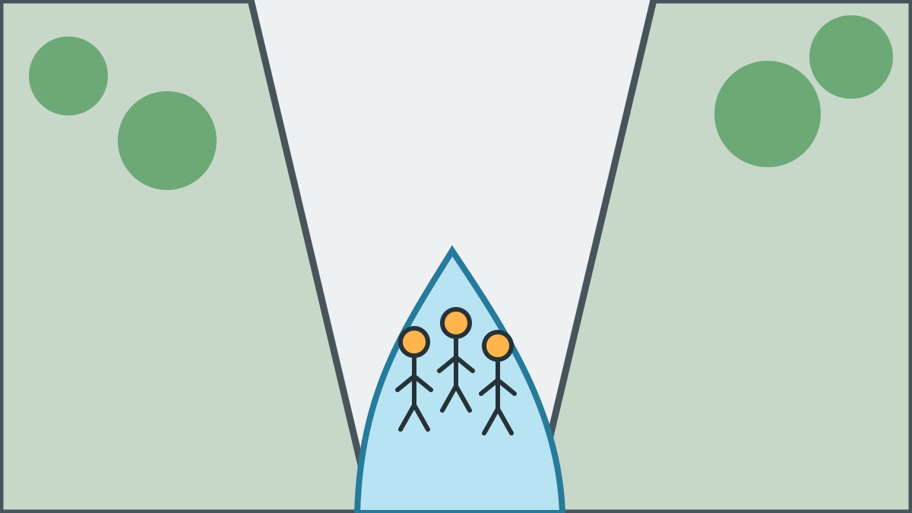

Canyoning in der Kobelache bei Dornbirn
Die Kobelache, in offiziellen Bezeichnungen auch Kobelach oder Gunzenach/Kobelach genannt, liegt bei Dornbirn in Vorarlberg. Bewachsene Felswände, enge Passagen, klare Becken, Abseilstellen und natürliche Rutschen machen sie zu einer abwechslungsreichen Canyoning-Schlucht im Bodenseeraum.
Für euren Junggesellenabschied bieten wir drei private Tourvarianten in der Kobelache an. Damit lässt sich die Tour passend zur Erfahrung und Fitness der gesamten Gruppe auswählen.

Canyoning-Touren in der Kobelache
- Merlins World: Schwierigkeit 2 von 5, ca. 4 Stunden, ideal für Einsteiger und alle, die sich langsam ans Canyoning herantasten möchten, 100 € pro Person.
- Kangaroo Jump: Schwierigkeit 3 von 5, ca. 4 Stunden, für sportliche Einsteiger mit Lust auf Action, 100 € pro Person.
- Kobelache Intensiv: Schwierigkeit 4 von 5, ca. 5,5 Stunden, für sehr fitte JGAs mit Ausdauer, 150 € pro Person.
Die Schwierigkeitsstufen sind unsere eigene Orientierung und keine allgemeingültige Norm. Alle Angaben zu Abseilern, Sprüngen, Rutschen und Schwimmstrecken sind Maximalwerte. Jeder Sprung kann umgangen werden.
Kobelache-Touren direkt vergleichen
Treffpunkt am Wanderparkplatz Gütle
Für Kobelache-Touren treffen wir uns am Wanderparkplatz Gütle in Dornbirn. Die genaue Uhrzeit vereinbaren wir direkt mit der buchenden Person, üblicherweise starten wir gegen 9:00 Uhr.
Ab dem Treffpunkt beginnt euer Sorglos-Paket. Wir organisieren Ausrüstung, Transfer zum Einstieg und zurück, Sicherheits-Einweisung, Führung, Fotos und Videos sowie Snack und Getränke während und nach der Tour. Persönliche Gegenstände werden während der Tour sicher aufbewahrt.
JGA in Vorarlberg, gut erreichbar aus drei Ländern
Dornbirn liegt zwischen Bodensee, Allgäu und Ostschweiz. Dadurch ist die Kobelache für Gruppen aus Vorarlberg, Süddeutschland, Österreich und der Schweiz gut erreichbar. Die private Canyoning-Tour kann die zentrale Aktivität eures JGA-Tages oder Wochenendes sein. Wir übernehmen die komplette Organisation der Canyoning-Tour und könnt euch auf euren JGA konzentrieren und genießen.
Wetter und Wasserstand in der Kobelache
Regen allein entscheidet nicht darüber, ob eine Tour stattfinden kann. Maßgeblich sind Wasserstand, Gewitterrisiko, Naturgefahren sowie bestehendes oder drohendes Hochwasser im gesamten Einzugsgebiet. Auch bei Sonnenschein kann ein ungünstiger Wasserstand bestehen. Wir treffen die endgültige Sicherheitsentscheidung und informieren die buchende Person so früh wie möglich.
Ist die geplante Tour nicht sicher möglich, prüfen wir zuerst eine Anpassung von Tour oder Startzeit, danach einen Ersatztermin und schließlich die vertraglich vorgesehene Erstattung, falls keine passende Lösung zustande kommt.
Was ihr für die Kobelache braucht
Alle Teilnehmer müssen sicher schwimmen können, trittsicher sein und die zur gewählten Tour passende Fitness mitbringen. Ihr benötigt Badekleidung, Handtuch, Wechselkleidung und ev. persönlich notwendige Medikamente. Die vollständige Canyoning-Ausrüstung mit Schuhen stellen wir.
Checkliste für euren Canyoning-JGA · JGA in der Kobelache anfragen